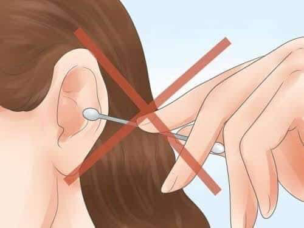

Ear hygiene or ear cleaning is when earwax accumulates enough,
it may block the ear canal (and hearing).
A health care professional may have to wash it out, vacuum it,
or remove it with special instruments.
Alternatively, your physician
may prescribe ear drops that are designed to soften the wax.
Cleaning your ears
* Clean your ears with extra care. Wipe the outer ear with a washcloth or tissue. Do not put anything into your ear smaller than your elbow. Do not use Q-tips, bobby pins or sharp pointed objects to clean your ears. These objects may injure the ear canal or eardrum.
* Earwax is the ear's mechanism for self cleaning. If you have a build-up of wax that is blocking your hearing, see your doctor to have it removed.

* If you experience itching or pain in your ears, consult with your primary care physician to determine the appropriate treatment and to determine if you need to see a specialist.
* If you have pierced ears, clean your earrings and earlobes regularly with rubbing alcohol.
The ear is an advanced and very sensitive organ of the human body.
The ear’s function is to transmit and transduce sound to the brain through the parts of the ear: the outer ear, the middle ear and the inner ear.
The major task of the ear is to detect, transmit and transduce sound.
Another very important function of the ear is to maintain our sense of balance.
The best way to describe the functioning of the ear is to describe the path which the sound waves take on their way through the brain.
The reason we feel tempted to clean our ears is because of that substance called cerumen, commonly called earwax.
It’s normal for your body to produce it, and it actually helps protect and lubricate your ears.
If you didn’t have earwax, your ears would probably be itchy and dry.
It even has antibacterial properties, which means your ears are self-cleaning.
Earwax is like a filter for your ears, keeping out harmful things like dirt and dust, and trapping them so they don’t go deep inside.
When you chew and move your jaw, you help move old earwax out of the ear canal to the ear opening.
That’s where it usually dries up and falls out. But earwax isn’t formed in the deep part of your ear canal; it’s made in the outer section.
So, the only reason you’d have an earwax blockage up against your eardrum, is because you tried to clean your ears with a cotton swab and pushed the wax in deeper.
Should we really do self cleaning for our ear? According to the professionals, you shouldn’t clean your ears especially using cotton buds or cotton swabs. It may just deepen the earwax or cerumen to your ears.
The safest way to remove earwax buildup from your ears is to visit your doctor. At your appointment, your doctor can use special instruments, like a cerumen spoon, forceps, or suction device, to clear the blockage. But, for you to maintain it clean.
You can use a cloth to dampen it to the outer part of your ears.
1. Get a clean cloth
2. Wet the clean cloth with water
3. dampen the outer part of your ear with wet clean cloth.
1. It is the one that keeps out harmful things like dirt and dust trapping to your ears? - CERUMEN(EARWAX).
2. What part of the ear is earwax/cerumen being formed? -OUTER EAR/EXTERNAL EAR.
3. It is used to transmit and transduce sound to the brain. -EARS.
4. - 6. Devices used to clear the blockage of your ears - CERUMEN SPOON, FORCEPS & SUCTION DEVICE.
7-9. give 3 major function/task of the ear? (TO 1)DETECT, 2)TRANSMIT AND 3)TRANSDUCE SOUND).
10. Another important function of the ear. (TO MAINTAIN OUR SENSE OF BALANCE).
11. It is normal to produce and it lubricates our ears. (EARWAX).
12. What are those helpful ways to move old earwax out of the ear canal to the ear opening. (BY MOVING YOUR JAW AND CHEWING).
13. -14. What is the main reason about earwax that blockage against your eardrums? ( TRYING TO USE COTTON SWABS/USE OF COTTON SWABS THAT PUSHES DEEPLY THE WAX).
15.Yes or No. Do professionals allowed self cleaning of the inner ear? (No).